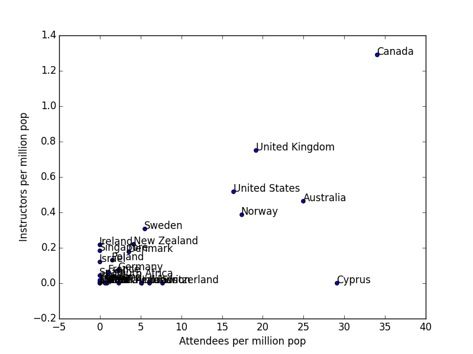

Plot This
The most useful little guide to visualization I've ever found is the decision tree created by Andrew Abela, which you can find here. Do you want to show a comparison, a distribution, a relationship, or a composition? If it's a comparison, is it among items or over time? Each choice leads to a different kind of plot, and while you may not agree with all the choices, it makes the reasoning behind them concrete.
One day, I hope someone will turn that chart into a half-day lesson on visualization for Software Carpentry. Before then, though, I have a little visualization challenge that I think some of you might enjoy. This small data set shows population, number of workshop attendees, and number of instructors by country:
Country, Population, Attendees, Instructors Australia, 23737000, 592, 11 Brazil, 203850000, 116, 1 Canada, 35675000, 1215, 46 China, 1368090000, 24, 1 Cyprus, 858000, 25, 0 Denmark, 5655000, 20, 1 France, 66092000, 72, 4 Germany, 80767000, 183, 6 Ghana, 27043000, 24, 0 India, 1266580000, 0, 1 Ireland, 4609000, 0, 1 Israel, 8296000, 0, 1 Italy, 60782000, 81, 1 Japan, 127020000, 0, 1 Jordan, 6688000, 34, 0 Lebanon, 4104000, 25, 0 Netherlands, 16888000, 39, 0 New Zealand, 4560000, 19, 1 Norway, 5156000, 90, 2 Poland, 38496000, 60, 5 Saudi Arabia, 31521000, 20, 0 Singapore, 5469000, 0, 1 South Africa, 54002000, 90, 2 Spain, 46464000, 0, 2 Sweden, 9743000, 54, 3 Switzerland, 8211000, 63, 0 Thailand, 64871000, 0, 1 United Kingdom, 64105000, 1231, 48 United States, 320354000, 5253, 166
I'd like a scatter plot comparing workshop attendees per capita to instructors per capita. This little Python program does that:
import sys
import csv
import numpy as np
from matplotlib import pyplot as plt
countries = []
populations = []
attendees = []
instructors = []
with open(sys.argv[1], 'r') as raw:
cooked = csv.reader(raw)
for (c, p, a, i) in cooked:
countries.append(c)
populations.append(float(p))
attendees.append(float(a))
instructors.append(float(i))
populations = np.array(populations) / 1e6
attendees = np.array(attendees) / populations
instructors = np.array(instructors) / populations
plt.scatter(attendees, instructors)
plt.xlabel('Attendees per million pop')
plt.ylabel('Instructors per million pop')
for (label, x, y) in zip(countries, attendees, instructors):
plt.annotate(label, xy = (x, y))
plt.show()
The plot produced by this program is:

It's not particularly useful (which is Canadian for "it's awful"): labels overlap, values crowd near the origin, and so on. My challenge to readers is to create something better. More specifically, add a comment to this post with your code (in any language) and a link to the picture it produces, and explain briefly why you think it's better. And while you're thinking about how to do that, have a look at Ned Gulley's In Praise of Tweaking – if there's a way to do for visualization what his programming contest does for performance, I'd like to give it a try.